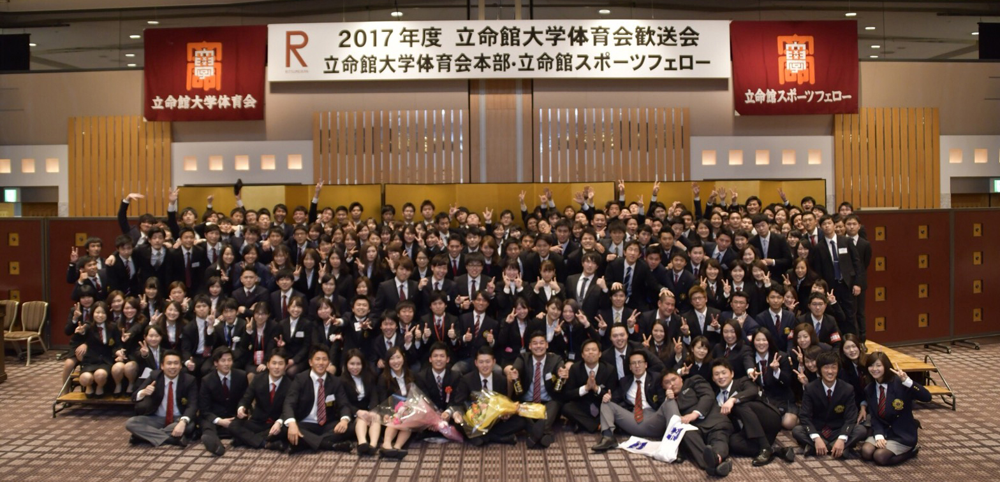
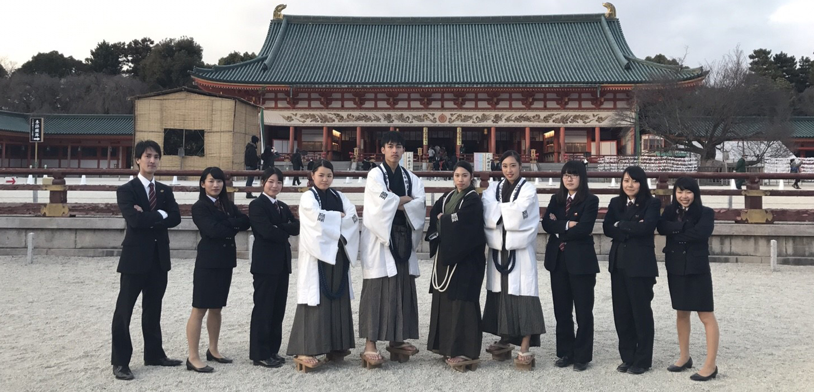
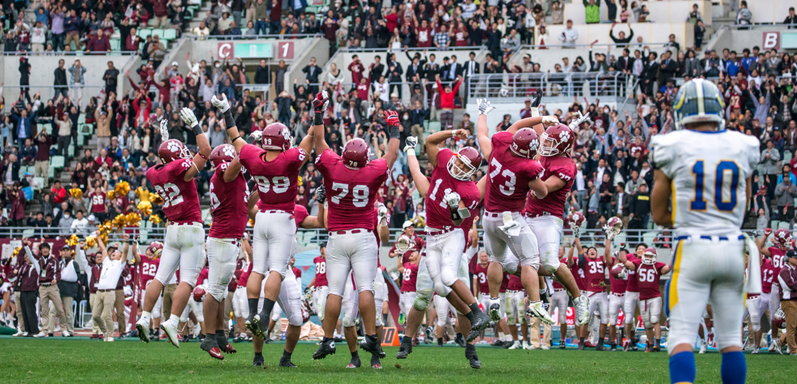
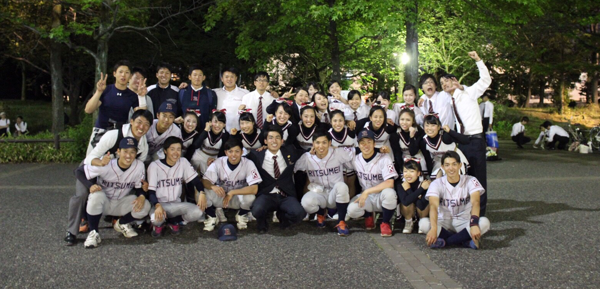
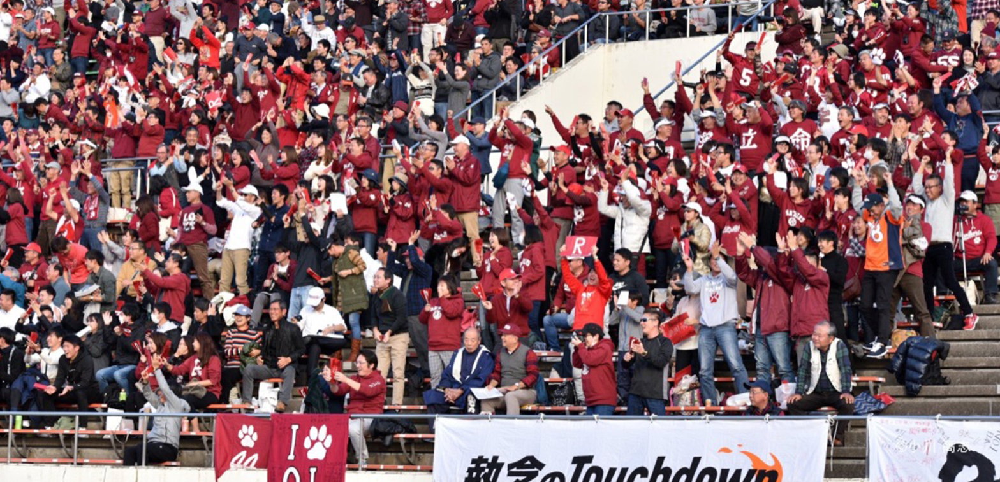
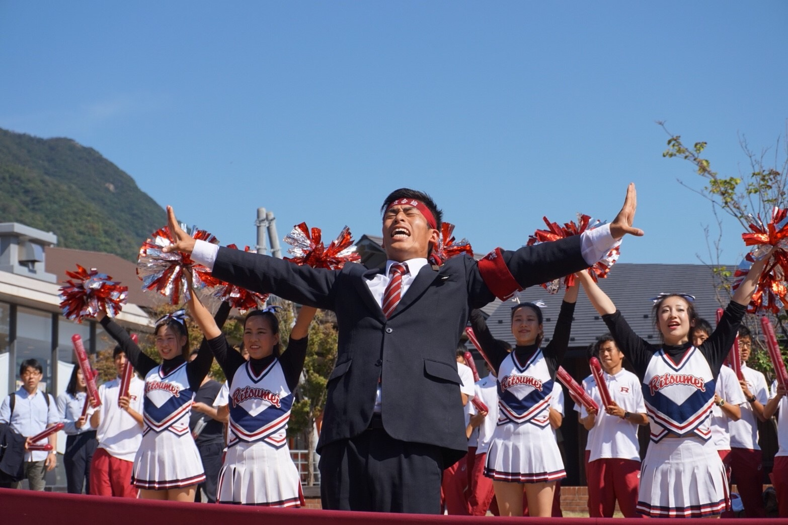
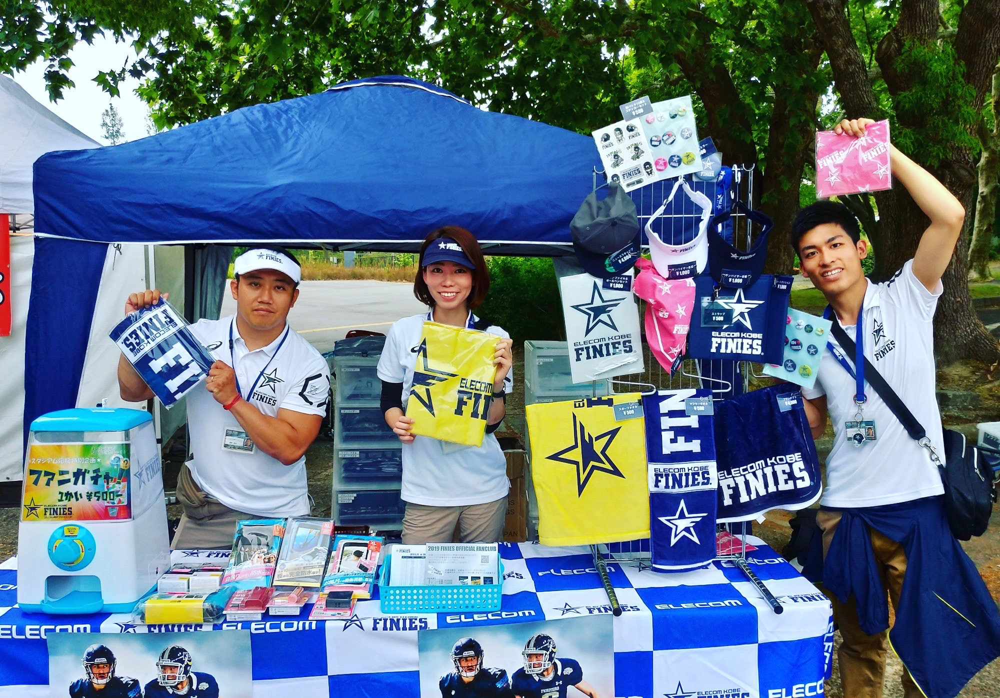
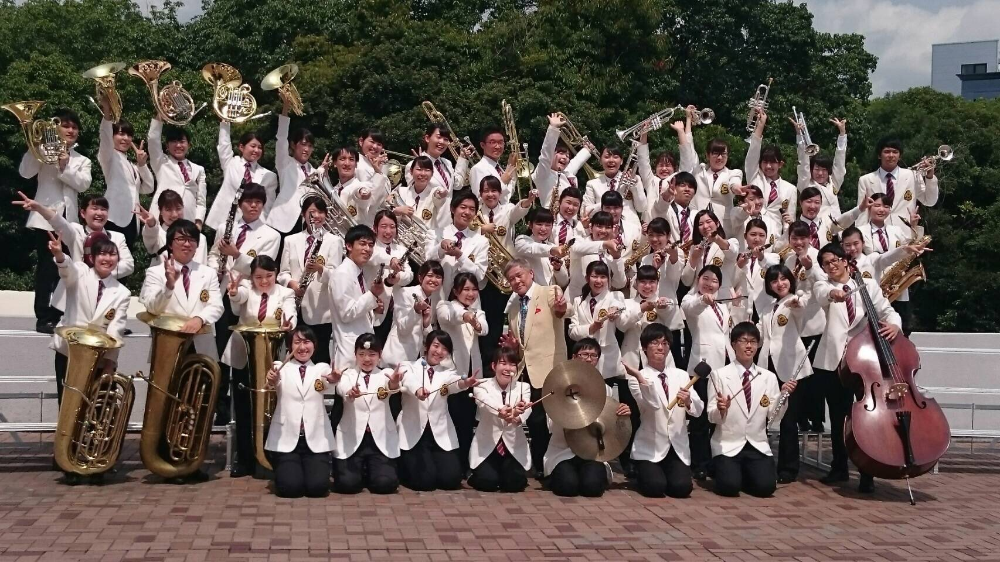

<!DOCTYPE html>
<html lang="en">
<head>
  <meta charset="UTF-8">
  <meta name="viewport" content="width=device-width, initial-scale=1.0">
  <meta http-equiv="X-UA-Compatible" content="ie=edge">
  <title>Document</title>
  <link rel="stylesheet" href="./assets/css/reset.css">
  <link rel="stylesheet" href="./assets/css/style.css">
  <script defer src="https://ajax.googleapis.com/ajax/libs/jquery/3.4.1/jquery.min.js"></script>
  <script defer src="./assets/js/app.js"></script>
</head>
</html>
<body>
    <div class="header">
        <nav class="global-nav">
            <ul class="global-nav__list">
              <li class="global-nav__item"><a href="">Profile</a></li>
              <li class="global-nav__item"><a href="">My Activity</a></li>
              <li class="global-nav__item"><a href="">Contact</a></li>
            </ul>
          </nav>
          <div class="hamburger" id="js-hamburger">
            <span class="hamburger__line hamburger__line--1"></span>
            <span class="hamburger__line hamburger__line--2"></span>
            <span class="hamburger__line hamburger__line--3"></span>
          </div>
          <div class="black-bg" id="js-black-bg"></div>
        </header>
        <div class="header-name">
            My profile
        </div>
    </div>

    <br><br>


    <div id="slide">
        <ul>
            <li>
                <a href></a>
            </li>
            <li>
                <a href></a>
            </li>
            <li>
                <ahref></a>
            </li>
            <li>
                <a href></a>
            </li>
            <li>
                <a href></a>
            </li>
        </ul>
    </div>

        <section>
            <h2 class="sub-title">What kind of person is RYO?</h2>
            <h3 class="sub-title-explain">I will introduce myself on this site.</h3>
        </section>
        
        <section class="Ryo">
            <div class="item1">
                <div id="wrap" class="one"></div>
            </div>
            <div class="item2">
                <h3>Ryo Inoue</h3>
                <div class="container1">
                    <div class="prof">
                        <ul>
                            <li>Age</li>
                            <li>Birthday</li>
                            <li>BirthPlace</li>
                            <li>Hobby</li>
                            <li>MyDream</li>
                        </ul>
                    </div>
                    <div class="prof">
                        <ul>
                            <li>25</li>
                            <li>1995年1月20日</li>
                            <li>三重県</li>
                            <li>アメフト観戦、動画編集</li>
                            <li>人生を楽しく生きること</li>
                        </ul>
                    </div>
                </div>
            </div>
        </section>

        <div class="article">
            My Activity
        </div>

            <ul class="activity">
                <li class="activity">
                    
                    
                    
                </li>
            <div>
                <p class="activity-title">
                    立命館大学応援団団長
                    <p class="activity-explain">
                        平成29年度立命館大学応援団の団長でした。<br>
                        写真は出雲駅伝応援の様子です。<br>
                        慶應大の応援指導部解散に心を痛めています。<br>
                        母校愛は強めです。
                    </p>
                </p>
             </div>
             <div>
                <p class="activity-title2">
                    ファイニーズ広報スタッフ
                    <p class="activity-explain2">
                        社会人アメフトチームの広報スタッフ歴2年。<br>
                        仕事内容は、物販・SNS広報・ファンクラブ管理等..<br>
                        ちなみにボランティアです。笑<br>
                        4月に富士通フロンティアーズに移籍します。
                    </p>
                </p>
            </div>
            <div>
                <p class="activity-title">
                    立命館大学応援団吹奏楽部
                    <p class="activity-explain">
                        ４回生時関西大会金賞、全国にはあと一歩及ばず。<br>
                        オーボエを吹いていました。<br>
                        ※ドソロ集のリンクは<a href="https://www.youtube.com/watch?v=HooV4xAlyCw">こちら</a><br>
                        さて井上はどこでしょう？
                    </p>
                </p>
            </div>
            </ul>
        </section>
    
    <div class="otoiawase">
        <h3 >お問い合わせ</h3>
        <h5>私に興味のある方は、以下までご連絡ください。</h5>
        <a href="file:///Users/ryo/Desktop/NexSeed%20kadai/01_html/form.html" class="btn-square">Contact</a>
    </div>
    
        <div class="footer">
            <p>Copyright (c) NexSeed #58 </p>
        </div>
   
</body>
</html>